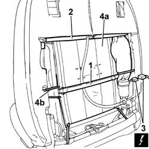
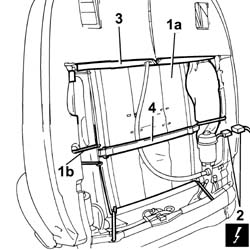

7045A38 DEVICE for LUMBAR ADJUSTMENT of driver's seat backrest - R.R. with seat removed
- Path
- Procedures > 70 FITTINGS > 7045 FRONT SEATS > 7045A FRONT SEAT ASSEMBLY > 7045A38 DEVICE for LUMBAR ADJUSTMENT of driver's seat backrest - R.R. with seat removed
- Kind
- repair procedure (removal / refitting; the operation number is the code)
- Applies to
- all engines; all production periods
- Interactive page
- https://sloeber94.github.io/elrnDB-lThss/en/#/80554
Applies to: all engines; all production periods
 Removing
Removing
 Refitting
RefittingSee in Op. 7045J10 switch unit for movement of one front seat, l/h or r/h - r+r for check
See in Op. 7045A42 Front seat GUARD (one), left or right - R.R.
- < R1 > [all the elements]
See in Op. 7045A98 Front seat rear pouch panel, left or right - R.R.
1. Remove the retaining band for the head restraint adjustment flexible cable.
2. Release the backrest cover upper surround.
3. Disconnect the electrical connector for the lumbar adjustment motor.
 | Description | Connector |
|---|---|---|
3 | Driver's seat lumbar adjustment motor | N038 |
4. Remove the backrest lumbar adjustment device (4a), acting on the retainers (4b).

Applies to: all engines; all production periods
Refitting
Removing- Check that the backrest lumbar adjustment device is not damaged.
1. Fit the backrest lumbar adjustment device (1a) in the housing and secure it using the retaining hooks (1b).
2. Connect the electrical connector for the lumbar adjustment motor.
| Description | Connector |
|---|---|---|
2 | Driver's seat lumbar adjustment motor | N038 |
- Check the operation of the motor
3. Fit the backrest cover upper surround.
4. Fit the retaining band for the head restraint adjustment flexible cable.

Applies to: all engines; all production periods
See in Op. 7045A98 Front seat rear pouch panel, left or right - R.R.
See in Op. 7045A42 Front seat GUARD (one), left or right - R.R.
- < R1 > [all the elements]
See in Op. 7045J10 switch unit for movement of one front seat, l/h or r/h - r+r for check
Topics linked from this page (3)
- 7045A42 Front seat GUARD (one), left or right - R.R.
- 7045A98 Front seat rear pouch panel, left or right - R.R.
- 7045J10 switch unit for movement of one front seat, l/h or r/h - r+r for check
Topics that link to this page (7)
- O25 LEFT OR RIGHT FRONT SEAT LUMBAR ADJUSTMENT NOT WORKING
- 7045A39 Device for driver's seat backrest lumbar adjustment - R.R.
- 7045A78 Front seat BACKREST FRAME. (one), left or right - R.R.
- 7045J42 Front seat head restraint adjustment motor, left or right - R.R. after electric circuit check
- 7045J64 Cable between motor and seat head restraint adjustment device (one), left or right - R.R.
- 7045J65 Cable between motor and seat head restraint adjustment device (one), left or right - R.R. with seat removed
- 7045N16 FRONT SEAT BACK MASSAGE/LUMBAR ADJUSTMENT POCKET (1), LEFT OR RIGHT - R.R. WITH SEAT REMOVED